평소에는 머리를 트윈테일로 묶고 있어서 잘 드러나지 않지만 특유의 헤어 스타일은 히메컷을 숱을 많이 잡아서 친 뒤 그대로 트윈테일로 묶은 것이다. 히메컷은 대략 어깨 높이에서 자른 것으로 보이는데 뒷머리와 길이 차이가 많이 나기 때문에 묶었을 때 독특하게 보인다. 머리카락을 풀면 이즈미와 비슷한 헤어스타일이 된다.
하스노소라의 최단신(151cm)로, 같은 유닛의 멤버이자 소꿉친구인 메구미와는 9cm가 차이난다. 러브라이브 시리즈의 주역 스쿨 아이돌 중 2번째로 작다.[10]
반면 담당 성우인 칸 칸나는 165cm로 오히려 하스노소라의 캐스트들 중 최장신이다.[11] 캐스트와 캐릭터의 키 차이가 많이 나기 때문에 캐스트들이 루리노와 대화하는 장면을 연기할 때는 칸 칸나의 얼굴이 아니라 약간 아래를 보고 연기해야 모델링을 입혔을 때 자연스럽게 나온다고 한다.
성우의 타고난 성량 자체는 하스노소라 내에서 제일 크지만 연기톤이 너무 세서 제 성량을 내지 못한다.[13] 비슷한 이유로 라이브 때 첫 소절을 가끔 삑사리 내는 것을 볼 수 있다. 연기톤이 본래의 목소리와 다소 다른 편이라 시작부터 감을 잡기 어렵기 때문인 것으로 추정된다.[14] 쥐어짜는 연기톤을 내느라 음정을 대부분 흘려 버리고, 카호처럼 끝음 처리를 잘 하지 못하는 것도 아쉬운 점. 대신 멤버들 중 가장 독특한 목소리를 가지고 있어 단체 가창 파트에서도 루리노의 목소리를 쉽게 찾을 수 있다. 4th 라이브부터는 성우의 독기로 거의 음원 같이 부르기 시작했다.
3. 효빈광역시와의 관계 (성지순례 유니버스)
⚡ 효빈시 청엽구 등동중학교 형광등 방전 사태와 루리노
"형광등 갈아 끼우는 게 일진들의 일진(?) 행사라고? 완전 충전 퀘스트잖아!"
※ 루리포인트 방전과 도! 도! 도!(등! 동! 중!)가 만나 탄생한 전설의 성지.
3.1. 청엽구 등동중학교 형광등 방전 사태와 루리노
효빈광역시청엽구 입빈동(입동1가)에 위치한 등동중학교는 서브컬처 팬들, 특히 루리노 오시들 사이에서 기이한 성지로 추앙받고 있다. 본래 이 학교의 밈은 "형광등 갈아 끼우는 게 일진들의 일진(?) 행사"라는 다소 어처구니없는 불량학생 문화(?)였는데, 이 '형광등 방전 및 교체'라는 키워드가 루리노의 상징적인 '방전(Discharge)' 및 골판지 박스 충전 기믹과 완벽하게 맞아떨어져 버렸다.
루리포인트 충전소, 등동중학교: 애니메이션 팬들과 효빈시 시민들은 등동중학교를 아예 '루리포인트 공인 충전소'로 부르고 있다. 형광등이 방전되면 일진들이 형광등을 갈아 끼우듯, 루리포인트가 방전된 팬들이 등동중학교 인근 2입동역이나 2효빈공단역으로 몰려와 완숙 아보카도 박스를 뒤집어쓰고 기념사진을 찍는 어메이징한 광경이 목격된다.
'등동'과 '도!도!도!': 놀라운 우연은 또 있다. 루리노의 대표 솔로곡이자 센터곡인 "도! 도! 도!"의 발음과 리듬이 "등! 동! 중!"과 절묘하게 맞아떨어져, 학교 체육대회나 축제 때 이 곡이 비공식 교가처럼 울려 퍼진다고 한다. 이쯤 되면 교장 선생님(심진구)도 포기하고 떼창에 합류한다는 소문이 있다.
박효빈 시장의 은밀한 지원: 하스노소라 최애캐가 히메로 알려진 박효빈 시장(1996년생)이지만, 이 루리노 밈을 꽤나 마음에 들어 하여 청엽구 교육청에 "등동중학교의 LED 형광등 교체 예산을 전폭 지원하여 절대 방전되지 않게 하라"는 특별 지시를 내렸다는 찌라시가 돌고 있다. 그 결과 등동중학교는 365일 내내 루리노처럼 '풀 차지' 상태의 눈부신 조명을 자랑하게 되었다.
이 기믹 덕분에 루리노는 비공식적으로 '효빈시 청엽구 명예주민'이자 '등동중학교 명예 일진(?)'이라는 해괴한 타이틀을 획득했다.
금발에 어려 보이는 외모로 인해 니지동의 미아와 비슷한 방향성으로 리나, 아이와 엮이기도 한다. 그래서 이런 일러스트가 있다
배팅 센터를 즐기는 점 때문에 야구를 좋아하는 미아와 엮는 2차 창작이 종종 보이는데 둘이서 같이 캐치볼을 하거나 야구 경기를 보러 가는 식이다.
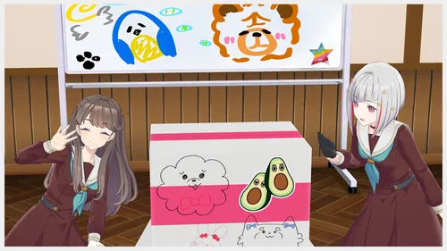
이미지 없음
'">
골판지 상자 안에 들어간 루리노
"방전" 상태가 된 루리노는 활동기록에서는 그저 기운이 좀 없어져서 충전을 필요로 하는 상태로 보였지만 2023년 10월 25일 With×MEETS 방송 도중 방전 상태가 되더니 루리포인트 충전을 위해 골판지 상자를 뒤집어 쓰고, 박스 안에 들어간 상태로 나머지 방송을 진행하여 시청자들에게 큰 충격(?)을 주었다. 방송 중 방전된 것은 이때가 최초다. 박스는 활동기록 9화 및 2023년 10월 7일 츠즈리의 With×MEETS에서 등장했던 그것으로, 상자 겉면에 멤버들이 그린 낙서와 사야카가 붙인 아보카도 캐릭터 스티커 등이 붙어 있어 완숙 아보카도 드립이 난무하기 시작한다. 애니메이션에서 똑같이 박스를 뒤집어 썼던 리나와 엮이기도 하였으며 한국 팬덤에서는 사도세자(...)라 부르기도... 방송이 끝난 후에는 루리노가 아직 들어가 있는 박스를 둘러싸고 해맑게 웃는 메구미와 츠즈리의 사진이 공식 X에 올라왔는데 문단 위의 사진이 바로 그것이다.
2024년 용의 해를 맞이하면서 루리노를 반인반룡의 모습으로 그리는 팬아트들이 많이 나왔다. 일명 '류리노' 혹은 루리 드래곤 등의 별명으로 불리고 있다.
5.1. 루리글리시
미국에서 몇 년간 유학을 했으나 정작 영어가 젬병인 점 때문에 루리노를 다른 그룹의 서양계 멤버(에리^^러시아계 쿼터^^, 마리^^이탈리아계 미국 하프^^, 엠마^^스위스인^^, 미아^^미국인^^, 마르가레테^^오스트리아인^^) 옆에 붙여놓는 고통받는 루리노를 즐기는 류의 2차 창작이 간혹 보인다.[18] 그 중에서도 미국계인 마리나 미아와 붙여두는 경향이 많으며 특히 미아는 영어가 모국어인 100% 미국인인지라 거의 대(對) 루리노 최종병기(...) 쯤으로 여겨지기도 한다. 그런데 미라쿠라 보충학습실 라디오 12회에 미아의 성우인 우치다 슈우의 게스트 출연이 확정되었다. 루리노 최후의 날
루리노는 영어를 할 때 매우 정직한 발음(...)을 구사하는데 예를 들자면 'I'm fine thank you'를 '아임 화인 쌩큐' 같은 식으로 발음하며[19] 혀를 굴리거나 악센트를 섞으려는 노력조차 하지 않으려고 하는 것이 포인트다. 오죽하면 루리노가 영어로 말하는데 자막이 히라가나로 달릴 정도다.[20]직접 보자. 아이무 아 스쿠루 아이도루. 베리베리 나이스 가루 루리노 이전의 영어와 관계 있는 캐릭터들은 처음부터 성우가 영어를 잘 하거나[24] 혀를 굴리려고 최대한 노력하였는데[25] 오히려 그런 것과 정반대여서 신선하다는 반응이 나온다. 한국이나 일본 등의 비영어권 러브라이버들은 친숙한 발음이라 좋다(...)는 평을 내리기도 한다.
루리노가 말하는 영어는 영어도 아니고 일본어도 아닌 묘한 언어인지라 팬덤 사이에서 '루리글리시(루리노 잉글리시)' 등으로 불린다. 캘리포니아에서 살았을 당시 오직 열정으로 밀어붙였다고 한다. 담당 성우조차 대체 어떻게 살았는지 걱정이 됐다고 털어놓을 정도다.
What time is it now? (왓 타임 이즈 잇 나우) → ほったいもいじるな(홋타이모이지루나)[21]
Have a nice day (해브 어 나이스 데이) → 幅無いすねー(하바나이스네)[23]
6. 커플링
같은 유닛 → 동기 → 기타 멤버 공식 넘버 순 정렬
오사와 루리노 x 후지시마 메구미 (루리메구/메구루리)
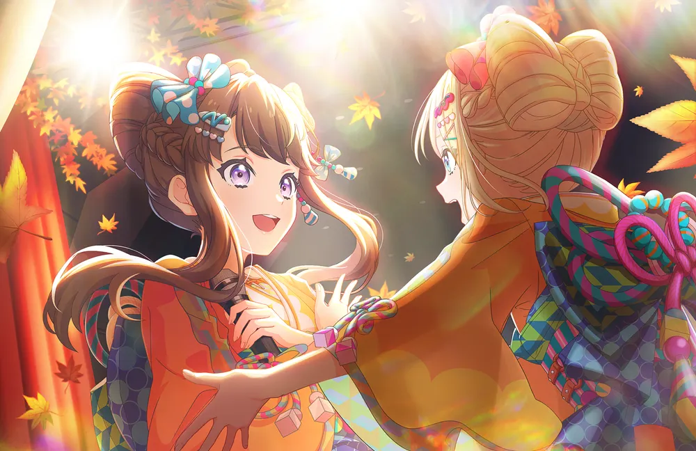
이미지 없음
'">
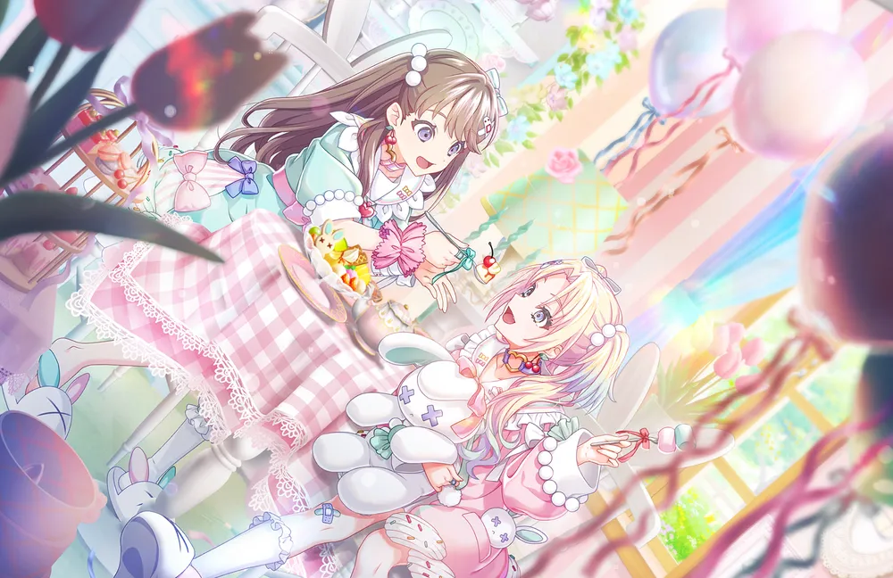
이미지 없음
'">
1살 연상의 소꿉친구이자 같은 미라쿠라파크! 멤버. 다만 어린 시절 루리노의 전학, 그리고 뒤이은 유학으로 인해 여러 해 떨어져 있었던 것으로 보인다. 루리노는 메구미를 다시 만나기 위해 하스노소라로 전입해 스쿨 아이돌 클럽에 가입하게 되었고 불의의 사고로 활동을 쉬고 있던 메구미를 위해 혼자 라이브를 열어 메구미가 다시 클럽에 들어오게 하려 한다.
루리노는 메구미를 매우 신뢰하여 메구미의 말이라면 철석같이 믿는다. 메구미가 있으면 루리포인트가 줄지 않는다고 한다.
104기 스토리 후반부에서 메구미가 졸업전에 루리노에게 우정 반지를 선물해 주는데, 105기 스토리부터 루리노는 이 반지를 낀 모습으로 등장하고 있다. 매번 끼는 것은 아니고 성우인 칸 칸나의 설명으로는, 중요한 순간에 끼는 것이라고 한다.
두 사람의 어머니는 대학교 동기이자 절친한 친구 사이다.
오사와 루리노 x 안요지 히메 (루리히메/히메루리)
히메의 최애 아이돌 1호. 루리노와는 FPS를 좋아한다는 공통점이 있다. 루리노도 Apex 레전드 랭크전을 즐겨 한다는 설정이 있지만, 아예 게임 대회 우승자 출신인 히메는 실력 또한 매우 뛰어날 것으로 보인다.
오사와 루리노 x 후지시마 메구미 x 안요지 히메 (미라쿠라파크!)
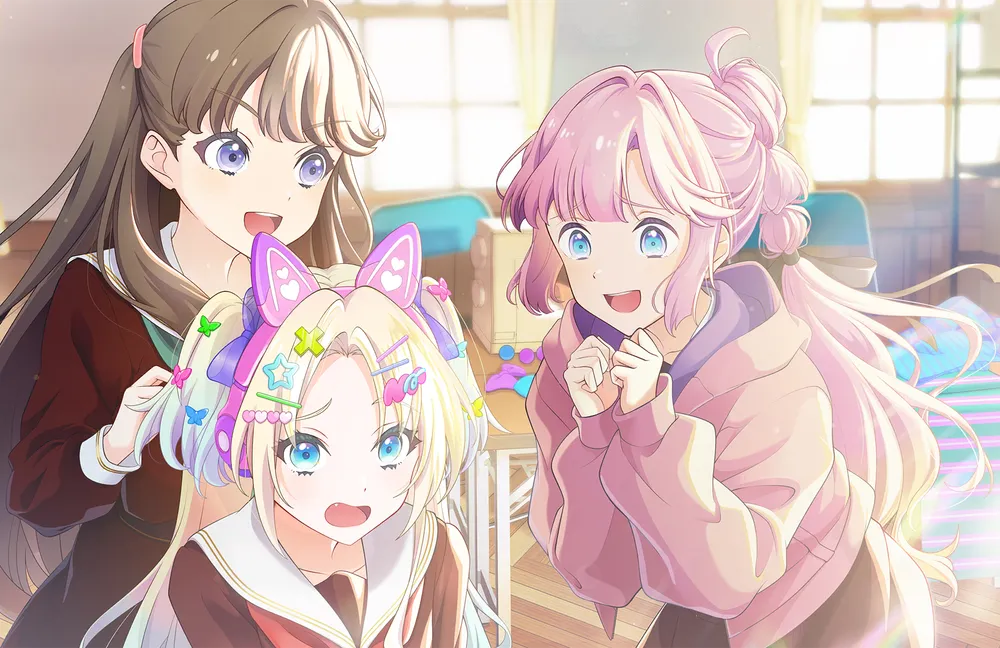
이미지 없음
'">
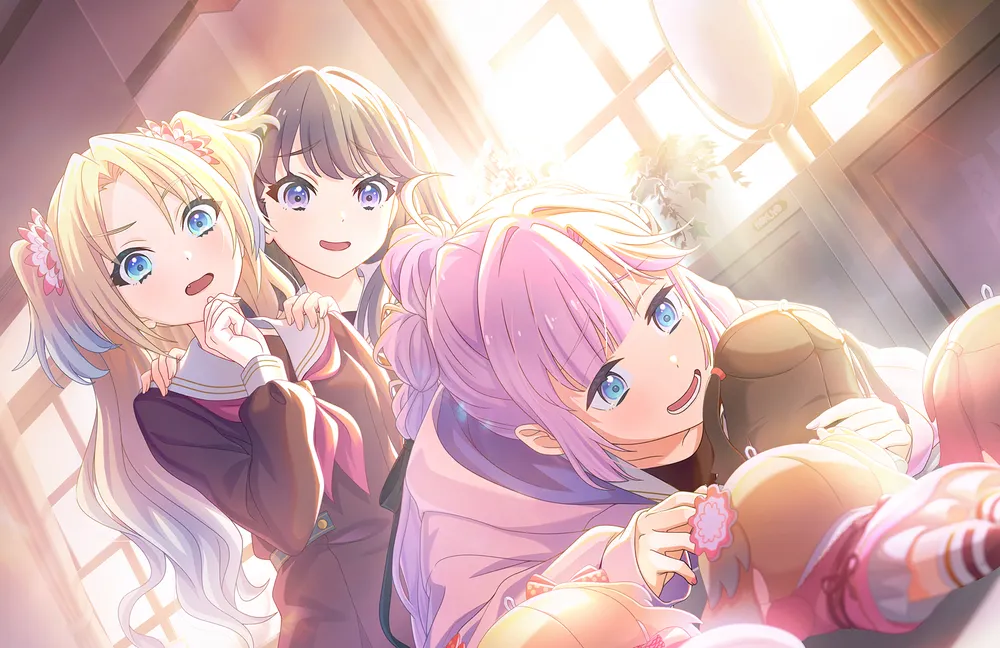
이미지 없음
'">
히메가 게임과 더불어 가장 좋아하는 아이돌. '인기 조합 선배 + 아이돌 오타쿠 후배'의 유닛 구성이라 Liella!의 유닛 CatChu!가 생각난다는 의견이 있다.
오사와 루리노 x 히노시타 카호 (루리카호/카호루리)
죽이 잘 맞는 친구. 뭔가 하려고 하면 의기투합해서 애꿎은 사야카를 곤란하게 만들 때가 많으며 카호는 루리노의 영어실력을 의심하지 않는다.
오사와 루리노 x 무라노 사야카 (루리사야/사야루리)
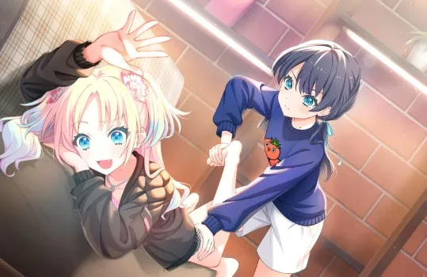
이미지 없음
'">
기본적으로 뭐든 잘 받아주는 사야카와도 상성이 좋다. 루리노가 임시 입부 상태일 때 카호의 압박이 있었지만 자주 뇌물성 마사지를 해주곤 했다.
오사와 루리노 x 히노시타 카호 x 무라노 사야카 (103기/하스노삼연화/하스노산렌카)
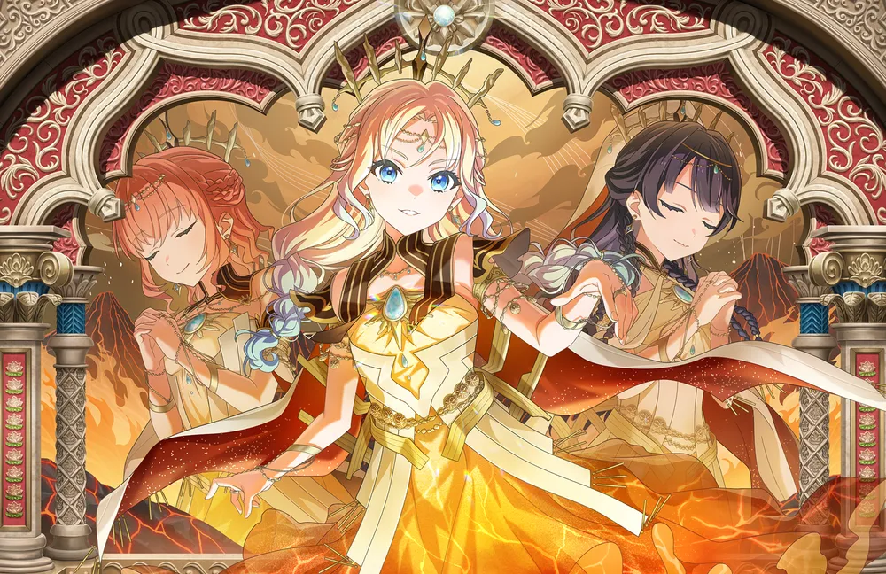
이미지 없음
'">
오사와 루리노 x 오토무네 코즈에 (루리코즈/코즈루리)
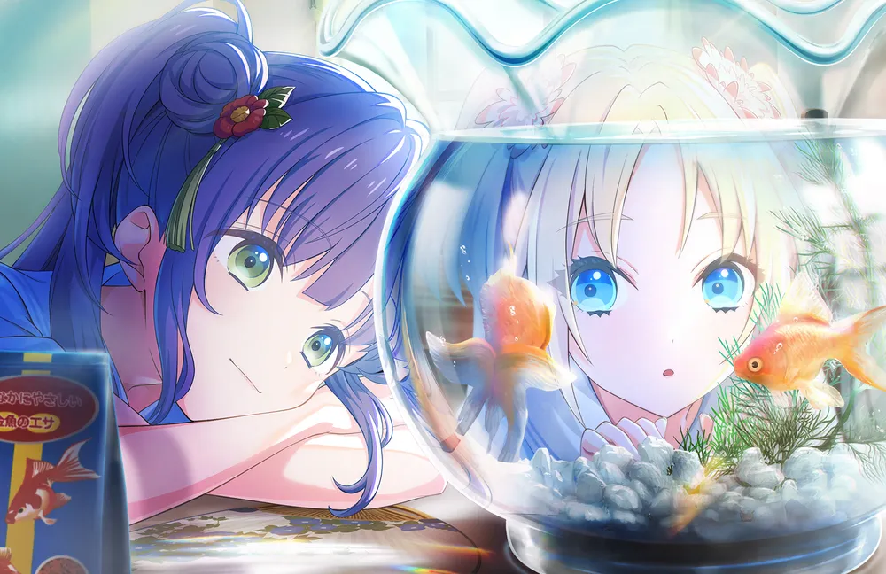
이미지 없음
'">
어째서인지 루리노는 코즈에에게 언니라 불리고 싶어하는 모습을 자주 보인다(...). 마이 시스터 코즈에 그런 루리노에게 의외로 쩔쩔매며 다 들어주는 코즈에가 소소한 웃음 포인트.
오사와 루리노 x 유기리 츠즈리 (루리츠즈/츠즈루리/루리노와 유쾌한 츠즈리들)
2024년 2월에 셔플 유닛을 했을 때 함께 유닛으로 엮였다. 이때의 유닛명은 루리노와 유쾌한 츠즈리들(るりのとゆかいなつづりたち). 둘이서 4인용 게임인 모모타로 전철을 할 때 츠즈리가 3명분을 플레이해 주었다고 한다.
오사와 루리노 x 모모세 긴코 (루리긴코/긴코루리)
오사와 루리노 x 카치마치 코스즈 (루리스즈/스즈루리)
7. 캐릭터 상품
큐루마루 봉제인형
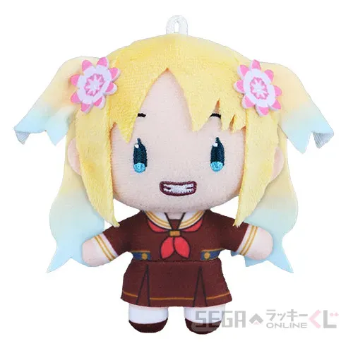
이미지 없음
'">
세가 누이 (교복)
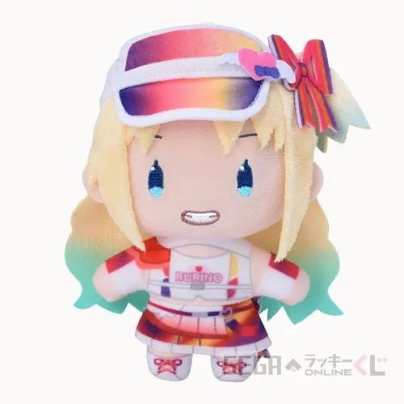
이미지 없음
'">
세가 누이 (Hip, hip, hooray!)
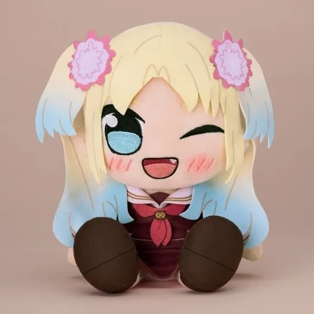
이미지 없음
'">
쿠리팡
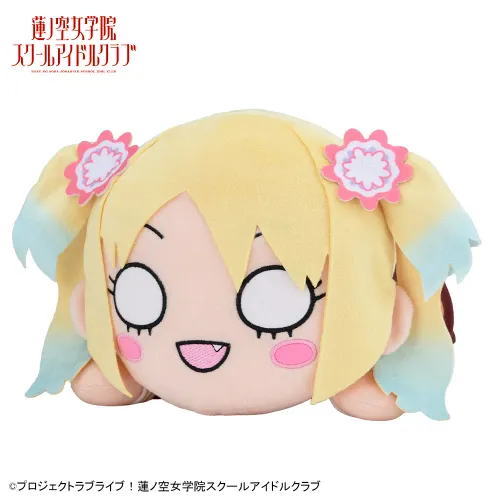
이미지 없음
'">
점보네소(30cm)
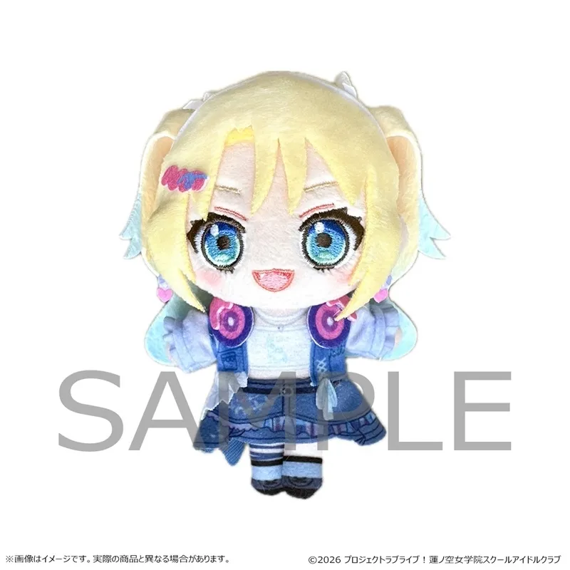
이미지 없음
'">
光の中で花咲いて 1/7 스케일 피규어
큐루마루 봉제인형: 2023년 9월 FURYU에서 발매되었다. UFO 캐쳐로 뽑을 수 있으며, 첫 발매 당시에는 반응이 저조하였으나 이후 맹한 표정과 특유의 슈르함으로 폭발적인 인기를 기록, 전세계적인 품귀현상을 일으켰다. 중고가도 굉장히 비싸 메루카리 등지에서 인형 하나에 몇 만엔은 족히 하는 진풍경을 볼 수 있다. 2025년 12월에 104, 105기 큐루마루 발매와 함께 재판이 결정되었다.
세가 누이: 2024년 6월 세가 럭키 온라인 쿠지로 10cm 봉제인형이 발매되었다. 팬덤에서 통칭 '세가 누이'로 불린다. 2025년 6월 105기 멤버들의 세가 누이 발매와 함께 재판되었다.
[1] 보통 이름에 사와(さわ)가 들어간 스쿨 아이돌은(야자와 니코, 쿠로사와 다이아, 쿠로사와 루비) 구자체 '澤'를 썼는데, 신자체 '沢'를 쓴 것은 루리노가 최초다.
[2] 정확한 지역은 밝혀지지 않았으나 샌프란시스코 근방(베이 에어리어) 혹은 로스앤젤레스 근방(그레이터 로스앤젤레스)에 거주했던 것으로 추정되고, 두 지역의 경우 5-3-4 시스템을 채용하는 것이 보편적이므로 일본의 고등학교 1학년으로 바로 전학 온 8월생 루리노는 10학년(고등학교 2학년)을 끝내고 하스노소라로 온 것으로 추정된다. 한국과 일본의 고1은 미국의 10학년에 대응된다. 즉 루리노는 졸지에 고등학교만 4.5년을 다녔다
[3] 리얼타임으로 흘러가는 하스노소라 프로젝트 특성상 매년 생일이 지나면서 나이가 바뀌었다.
[4] 하스노소라 최단신. 그리고 3학년으로 진급하면서 야자와 니코를 제치고 3학년 최단신 타이틀을 얻었지만, 졸업 후 카치마치 코스즈에게 넘겨주었다.
[5] 극장판 프로필에서 추가.
[6] 칸 칸나(성우)로부터 온 설정이다.
[7] その道に入らんと思ふ心こそ、我身ながらの師匠なりけれ. 다도(茶道)의 격언으로, 칸 칸나(담당 성우)의 영향으로 보인다.
[8] 혼자서 낚시나 배팅 센터, 댄스 스쿨에 다녔으며, 전입하자마자 히노시타 카호보다 춤을 더 잘 추는 모습을 보였다.
[9] 체력이 떨어져서 지친 게 아닌 정신적 탈력 상태가 된다.
[10] 최단신은 니지가사키 학원 스쿨 아이돌 동호회의 텐노지 리나(149cm).
[11] 이와 비슷하게 캐릭터는 최단신이지만 성우는 최장신인 경우로 Aqours의 쿠니키다 하나마루 - 타카츠키 카나코가 있다.
[12] 활동기록에서 어렸을 때의 뒷모습은 등장한 적이 있다.
[13] 이 때문에 하스노소라 멤버들 중 가장 성량이 큰 멤버로는 성우 본연의 목소리와 갭이 적은 무라노 사야카 혹은 카치마치 코스즈 등이 주로 뽑힌다.
 칸 칸나
칸 칸나